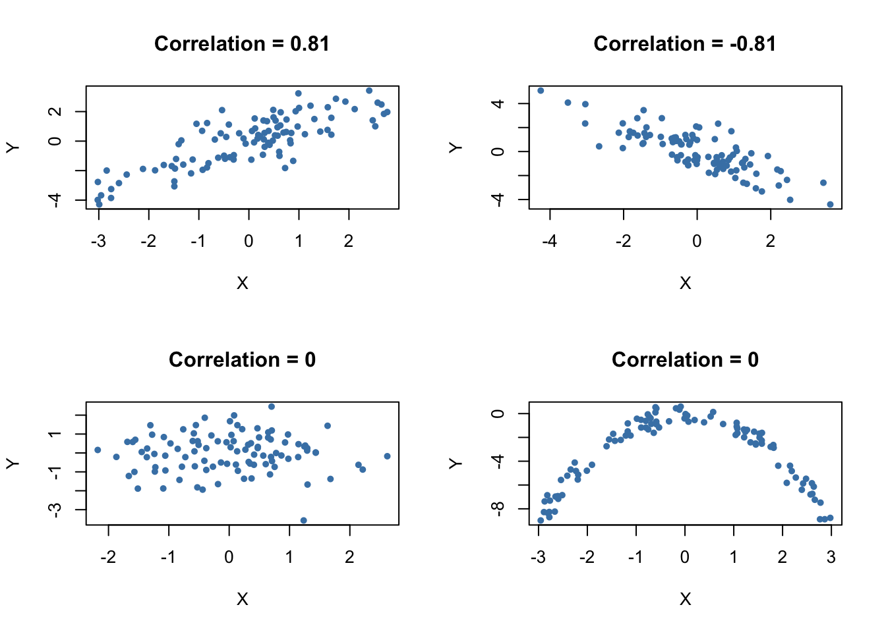

2.2 Orders of Integration and the DF-GLS Unit Root Test
Some economic time series have smoother trends than variables that can be described by random walk models. A way to model these time series is \[\Delta Y_t = \beta_0 + \Delta Y_{t-1} + u_t,\] where \(u_t\) is a serially uncorrelated error term. This model states that the first difference of a series is a random walk. Consequently, the series of second differences of \(Y_t\) is stationary. Key Concept 16.4 summarizes the notation.
Key Concept
16.4
Orders of Integration, Differencing and Stationarity
When a time series \(Y_t\) has a unit autoregressive root, \(Y_t\) is integrated of order one. This is often denoted by \(Y_t \sim I(1)\). We simply say that \(Y_t\) is \(I(1)\). If \(Y_t\) is \(I(1)\), its first difference \(\Delta Y_t\) is stationary.
\(Y_t\) is \(I(2)\) when \(Y_t\) needs to be differenced twice in order to obtain a stationary series. Using the notation introduced here, if \(Y_t\) is \(I(2)\), its first difference \(\Delta Y_t\) is \(I(1)\) and its second difference \(\Delta^2 Y_t\) is stationary. \(Y_t\) is \(I(d)\) when \(Y_t\) must be differenced \(d\) times to obtain a stationary series.
When \(Y_t\) is stationary, it is integrated of order \(0\) so \(Y_t\) is \(I(0)\).
It is fairly easy to obtain differences of time series in R. For example, the function diff() returns suitably lagged and iterated differences of numeric vectors, matrices and time series objects of the class ts.
Following the book, we take the price level of the U.S. measured by the Personal Consumption Expenditures Price Index as an example.
# define ts object of the U.S. PCE Price Index
PCECTPI <- ts(log(USMacroSWQ$PCECTPI),
start = c(1957, 1),
end = c(2012, 4),
freq = 4)
# plot logarithm of the PCE Price Index
plot(log(PCECTPI),
main = "Log of United States PCE Price Index",
ylab = "Logarithm",
col = "steelblue",
lwd = 2)
The logarithm of the price level has a smoothly varying trend. This is typical for an \(I(2)\) series. If the price level is indeed \(I(2)\), the first differences of this series should be \(I(1)\). Since we are considering the logarithm of the price level, we obtain growth rates by taking first differences. Therefore, the differenced price level series is the series of quarterly inflation rates. This is quickly done in R using the function Delt() from the package quantmod. As explained in Chapter ??, multiplying the quarterly inflation rates by \(400\) yields the quarterly rate of inflation, measured in percentage points at an annual rate.
# plot U.S. PCE price inflation
plot(400 * Delt(PCECTPI),
main = "United States PCE Price Index",
ylab = "Percent per annum",
col = "steelblue",
lwd = 2)
# add a dashed line at y = 0
abline(0, 0, lty = 2)
The inflation rate behaves much more erratically than the smooth graph of the logarithm of the PCE price index.
The DF-GLS Test for a Unit Root
The DF-GLS test for a unit root has been developed by Elliott, Rothenberg, & Stock (1996) and has higher power than the ADF test when the autoregressive root is large but less than one. That is, the DF-GLS has a higher probability of rejecting the false null of a stochastic trend when the sample data stems from a time series that is close to being integrated.
The idea of the DF-GLS test is to test for an autoregressive unit root in the detrended series, whereby GLS estimates of the deterministic components are used to obtain the detrended version of the original series. See Chapter 16.3 of the book for a more detailed explanation of the approach.
A function that performs the DF-GLS test is implemented in the package urca (this package is a dependency of the package vars so it should be already loaded if vars is attached). The function that computes the test statistic is ur.ers.
# DF-GLS test for unit root in GDP
summary(ur.ers(log(window(GDP, start = c(1962, 1), end = c(2012, 4))),
model = "trend",
lag.max = 2))##
## ###############################################
## # Elliot, Rothenberg and Stock Unit Root Test #
## ###############################################
##
## Test of type DF-GLS
## detrending of series with intercept and trend
##
##
## Call:
## lm(formula = dfgls.form, data = data.dfgls)
##
## Residuals:
## Min 1Q Median 3Q Max
## -0.025739 -0.004054 0.000017 0.004619 0.033620
##
## Coefficients:
## Estimate Std. Error t value Pr(>|t|)
## yd.lag -0.01213 0.01012 -1.199 0.23207
## yd.diff.lag1 0.28583 0.07002 4.082 6.47e-05 ***
## yd.diff.lag2 0.19320 0.07058 2.737 0.00676 **
## ---
## Signif. codes: 0 '***' 0.001 '**' 0.01 '*' 0.05 '.' 0.1 ' ' 1
##
## Residual standard error: 0.007807 on 198 degrees of freedom
## Multiple R-squared: 0.1504, Adjusted R-squared: 0.1376
## F-statistic: 11.69 on 3 and 198 DF, p-value: 4.392e-07
##
##
## Value of test-statistic is: -1.1987
##
## Critical values of DF-GLS are:
## 1pct 5pct 10pct
## critical values -3.48 -2.89 -2.57The summary of the test shows that the test statistic is about \(-1.2\). The the \(10\%\) critical value for the DF-GLS test is \(-2.57\). This is, however, not the appropriate critical value for the ADF test when an intercept and a time trend are included in the Dickey-Fuller regression: the asymptotic distributions of both test statistics differ and so do their critical values!
The test is left-sided so we cannot reject the null hypothesis that U.S. inflation is nonstationary, using the DF-GLS test.
References
Elliott, G., Rothenberg, T. J., & Stock, J. H. (1996). Efficient Tests for an Autoregressive Unit Root. Econometrica, 64(4), 813–836.